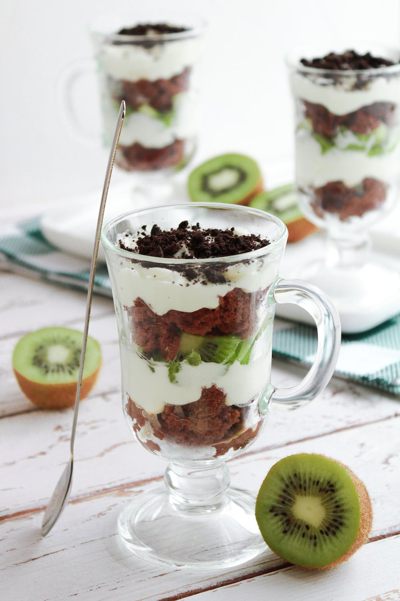

Fruit Trifle

An amazingly refreshing cold dessert made with fruits, whipped cream and sponge cake slices.
Ingredients
- Fresh fruits:
Kiwi, Pineapple, Melon, Grapes, Apple (or any of your favorites)
- 2-3 cups Chilled Whipped Cream
- 1.5 cups Powdered Sugar
- chocolate or vanilla sponge cake (plain)
- Nuts (optional)
Steps
- Finely dice all the fruits in a bowl.
- Beat the chilled whipped cream with sugar for 5-7 minutes or till it thicken.
- Chopped the cake slices into little squares like croutons.
Assembling
- In a big bowl make a first layer of cake pieces
- Now put some chopped mixed fruits and nuts
- Lastly add spoonful of whipped cream
- Keep repeating the above steps till you are done with all of your ingredients.
- Garnish with leftover cake crumbles and chocolate sauce/syrup
- Put the trifle bowl in the refrigerator to set
Serve Cold !! Enjoy :)